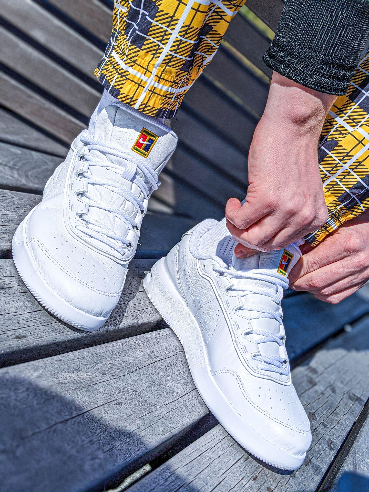
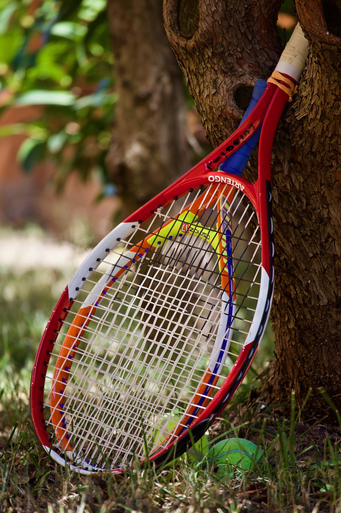
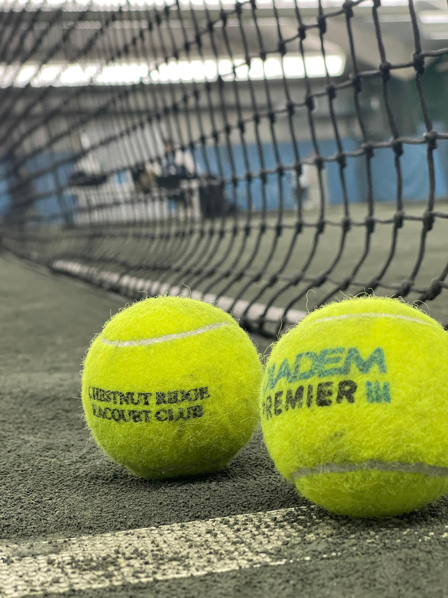

About equipment
Tennis is a sport that requires very little equipment to get started. The basic equipment needed to play tennis includes a racket, balls, and appropriate clothing and footwear. However, there are also many optional pieces of equipment that can enhance your game and make playing more enjoyable. We recommend that new players should invest in racket and shoes over other equipment. There are a lot of good online shops that sell tennis equipment. One of the most popular online shops is Tennis-Point, which offers a wide range of tennis equipment from top brands.
Shoes
There are many different types of tennis shoes available, each designed for a specific purpose. Shoes are an important piece of equipment for tennis players, as they provide the necessary support and traction needed to move around the court. Tennis shoes can be categorized by court type.
- Clay:
These shoes have a soft, sticky sole that provides good grip on clay courts. - Grass:
These shoes have a hard, smooth sole that provides good traction on grass courts. - Hard courts:
These shoes have a durable sole that can handle the abrasive surface of hard courts.

Rackets
Tennis racket should be chosen based on the player's skill level, playing style, and personal preferences. Rackets can be categorized by head size, weight, and balance. A larger head size provides a larger sweet spot and more power, while a smaller head size provides more control. A heavier racket provides more power and stability, while a lighter racket provides more maneuverability. A racket's balance can also affect its performance, with head-heavy rackets providing more power and head-light rackets providing more control.
We recommend that new players should choose a racket with a larger head size and a lighter weight, as this will provide more power and maneuverability.

Other accessories
We recommend new players to consider buying a tennis bag, as it will help you keep your equipment organized and protected. Additionally, other accessories like grips, strings and vibration dampeners can enhance your tennis experience. Grips can be added to the handle of the racket to provide a more comfortable and secure grip. Strings can be customized to provide different levels of power and control. Vibration dampeners can be added to the strings to reduce the amount of vibration felt when hitting the ball.
Balls are a necessary piece of equipment for tennis, and they come in different types and speeds. The most common types of balls are pressurized and pressureless balls. You should always bring a fresh can of balls to the court, as it is considered good practice.
